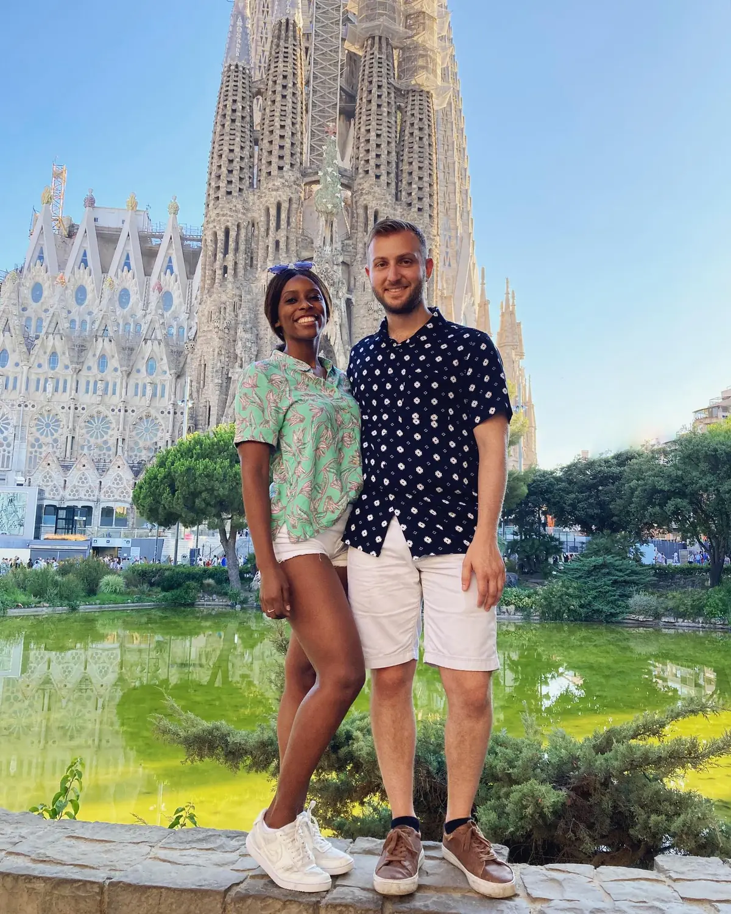
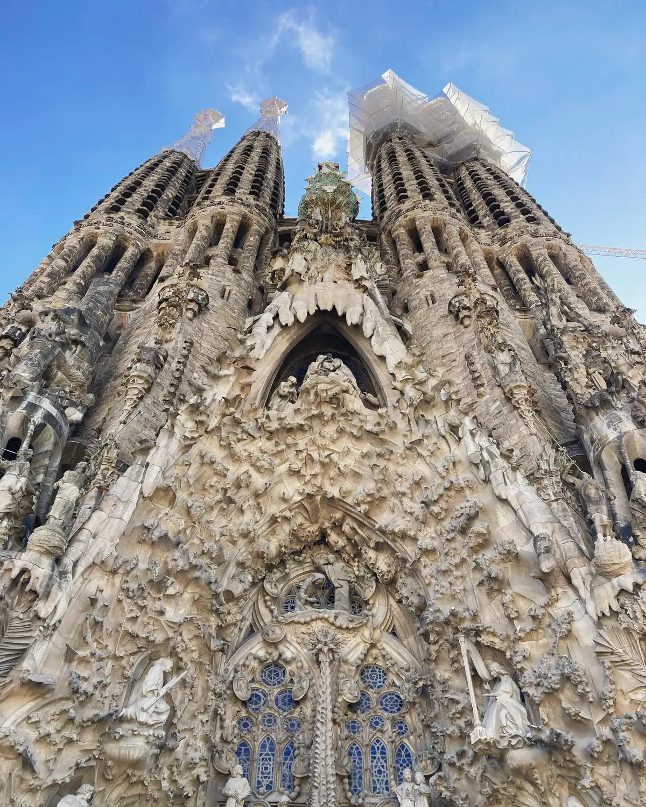

El icono01
La Sagrada Família
📍 Eixample · la basílica de Gaudí
Lo único que no te puedes perder. La basílica todavía inacabada de Gaudí no se parece a ningún otro edificio del mundo: un bosque de torres de piedra por fuera y una explosión de luz de colores por dentro. El estanque de la Plaça de Gaudí te da la clásica foto con reflejo. Reserva con antelación y ve temprano o cerca del cierre para tener una luz más suave y menos gente; vale la pena una entrada guiada con acceso a las torres para entender lo que estás viendo.
Reserva con antelaciónVe temprano
GetYourGuide
Te lo recomendamos